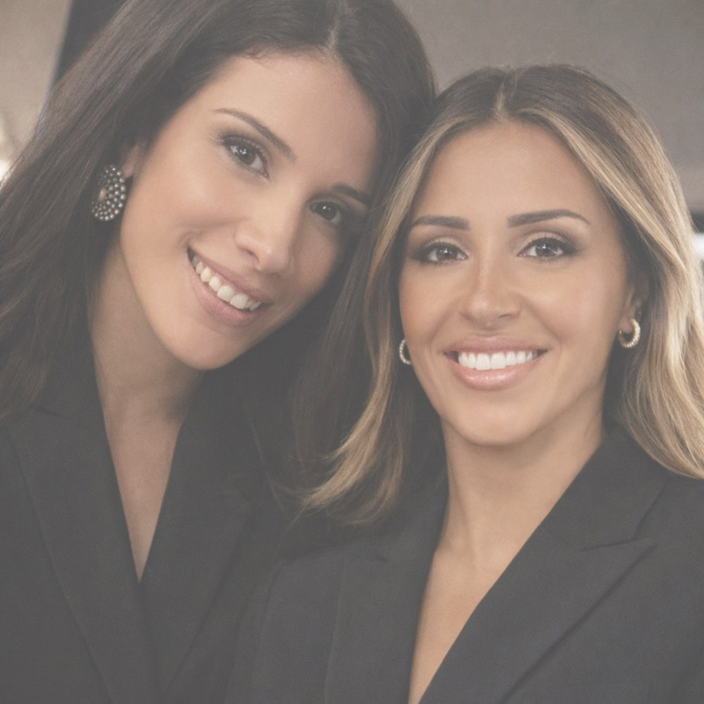

At Blush, we believe life’s most meaningful moments deserve to be celebrated beautifully. What began as a dream fueled by passion, creativity, and a love for bringing people together has blossomed into a catering experience centered around thoughtful details and unforgettable memories.
Today, Blush is two crafts under one name: a floral studio designing fresh, hand-built arrangements for weddings, celebrations, and everyday moments, and a catering team serving tray-passed bites and custom stations across San Diego, Orange County, and Los Angeles.
From intimate gatherings to special celebrations, we pour our hearts into every experience, combining beautiful presentation, personalized touches, and genuine hospitality.
More than florals and catering, Blush is about the connections we create, the stories we become part of, and the moments our clients cherish long after the celebration ends.
Florals and catering can each be booked on their own, or together as The Full Experience, with florals, catering, and the table setting all handled by Blush.
Where Blooms Meet Bites, and every moment feels special.